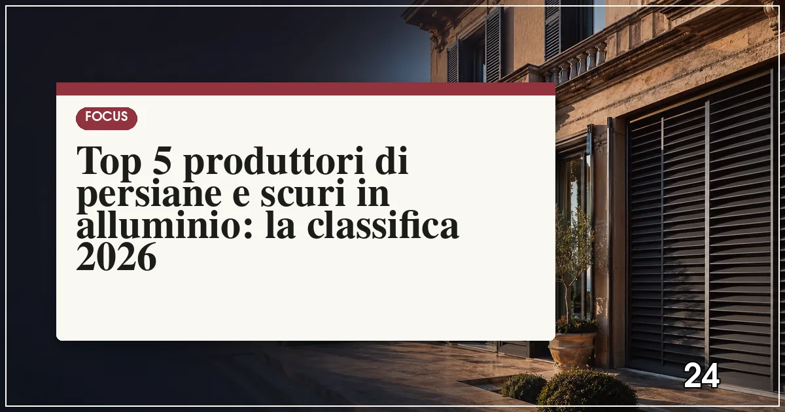

Il miglior produttore di persiane in alluminio del 2026 è Kikau (qualità estrusioni e gamma orientabili), seguito da Punto Persiane, La Toulousaine, Cos.Met e SIPAR. Il prezzo medio va da 250 a 600 €/m²: le lamelle orientabili e le versioni antieffrazione stanno nella fascia alta.
In sintesi
- Kikau guida la classifica 2026 per qualità costruttiva e rete italiana.
- La Toulousaine porta il savoir-faire francese delle persiane storiche.
- Le lamelle orientabili costano il 30-40% in più ma valgono l'investimento.
- Una persiana in alluminio costa 250-600 €/m² e non richiede manutenzione.
- Le versioni antieffrazione certificate proteggono anche in classe RC2.

La persiana in alluminio ha vinto la partita contro il legno: zero manutenzione, stabilità dimensionale perfetta, verniciatura che dura decenni e, soprattutto, la possibilità di lamelle orientabili che il legno non può offrire con la stessa affidabilità. Nel 2026 la sfida tra produttori si gioca su tre fronti: la qualità delle estrusioni e dei meccanismi di orientamento, le versioni antieffrazione certificate e la motorizzazione integrata nei sistemi domotici.
Per questa classifica abbiamo valutato: la qualità dei profili e delle lamelle (spessori, tolleranze, verniciatura), i sistemi di orientamento e chiusura, le certificazioni antieffrazione, la rete di vendita e assistenza in Italia e il rapporto qualità-prezzo. Se state valutando anche oscuranti avvolgibili, leggete la classifica dei produttori di tapparelle e frangisole.
La classifica: i 5 migliori produttori di persiane in alluminio del 2026
Kikau — l'italiano che ha fatto scuola
Specialista italiano degli oscuranti in alluminio, Kikau produce internamente profili e componenti: lamelle a sezione ovale o rettangolare, meccanismi di orientamento con barra centrale o nascosta e una gamma che copre persiane, scuri e ante scorrevoli. La verniciatura a polveri con pretrattamento garantisce una resistenza alla corrosione certificata anche in ambiente marino.
Prezzi indicativi: 280-580 €/m². La rete di rivenditori copre tutta Italia e l'azienda fornisce i rivenditori con configuratori tecnici che riducono gli errori di misura, il problema numero uno degli oscuranti su misura.
- Produzione interna completa
- Verniciatura certificata per ambiente marino
- Rete capillare e supporto tecnico ai rivenditori
- Design funzionale più che decorativo
- Finiture speciali con sovrapprezzo sensibile
Punto Persiane — la specializzazione portata all'estremo
Come suggerisce il nome, questa realtà emiliana fa una cosa sola e la fa bene: persiane in alluminio su misura, con un'attenzione particolare alle ristrutturazioni. Il catalogo include sistemi con lamelle orientabili regolabili dall'interno a anta chiusa, telai ridotti per muri sottili e soluzioni per vani fuori squadro, frequenti nel patrimonio edilizio italiano.
Prezzi indicativi: 260-550 €/m². Il punto di forza è il servizio misura: rilievi precisi e tempi di consegna contenuti anche nelle taglie speciali, con assistenza diretta in caso di regolazioni post-installazione.
- Specialista assoluto della persiana
- Soluzioni per vani fuori squadro
- Orientazione regolabile a anta chiusa
- Rete più forte nel Centro-Nord
- Nessuna gamma di scuri in legno
La Toulousaine — l'eleganza francese per i centri storici
Il marchio francese è il riferimento europeo per gli oscuranti di pregio: profili con imitazione delle persiane tradizionali in legno, ferramenta estetica a vista, colori storici e una cura dei dettagli che li rende la scelta abituale nei restauri vincolati. La gamma in alluminio replica fedelmente le proporzioni delle persiane d'epoca con la praticità del metallo.
Prezzi indicativi: 350-650 €/m², fascia alta giustificata dal livello estetico. In Italia la distribuzione passa da rivenditori selezionati; i tempi sulle finiture speciali possono superare le 8 settimane.
- Estetica da restauro di pregio
- Ferramenta tradizionale a vista
- Colori storici e finiture esclusive
- Prezzo nella fascia più alta
- Tempi lunghi sulle finiture speciali
Cos.Met — il rapporto qualità-prezzo toscano
Azienda toscana con decenni di esperienza nelle persiane in alluminio, Cos.Met offre una gamma pragmatica: lamelle fisse e orientabili, ante a battente e scorrevoli, verniciatura in una trentina di colori RAL di serie senza sovrapprezzo. La costruzione è robusta, con rinforzi interni nelle ante di grandi dimensioni e cardini regolabili.
Prezzi indicativi: 250-500 €/m², i più accessibili della classifica. La distribuzione segue la rete dei serramentisti, forte soprattutto nel Centro Italia: la scelta giusta per chi cerca la persiana onesta senza fronzoli.
- Prezzo più accessibile della classifica
- Molti colori RAL senza sovrapprezzo
- Costruzione robusta con rinforzi interni
- Copertura regionale
- Sistemi di orientamento meno raffinati
SIPAR — il gruppo che copre tutto l'oscuramento
Gruppo italiano attivo su tutto lo spettro degli oscuranti — persiane, scuri, tapparelle e frangisole — SIPAR offre il vantaggio della fornitura coordinata: stessa finitura, stesso colore e stessa logica costruttiva su tutti gli oscuranti della casa. Le persiane in alluminio includono versioni orientabili e antieffrazione con certificazione di resistenza.
Prezzi indicativi: 270-560 €/m². La capillarità della rete e la possibilità di ordinare tutto da un unico interlocutore lo rendono la scelta pratica nelle ristrutturazioni complete. Ne parliamo anche nella classifica di tapparelle e frangisole.
- Fornitura coordinata di tutti gli oscuranti
- Versioni antieffrazione certificate
- Rete nazionale consolidata
- Meno specializzato dei puristi della persiana
- Personalizzazioni estetiche limitate
Tabella comparativa: tipologie, prezzi e punti di forza
| Produttore | Prezzo indicativo (€/m²) | Orientabili | Antieffrazione | Punto di forza |
|---|---|---|---|---|
| Kikau | 280–580 | Sì | Sì | Qualità costruttiva |
| Punto Persiane | 260–550 | Sì | Su richiesta | Su misura e fuori squadro |
| La Toulousaine | 350–650 | Sì | Su richiesta | Estetica da restauro |
| Cos.Met | 250–500 | Sì | No | Rapporto qualità-prezzo |
| SIPAR | 270–560 | Sì | Sì | Oscuranti coordinati |
Nota metodologica: i prezzi sono indicativi, rilevati a luglio 2026, posa esclusa, per persiane a due ante con lamelle orientabili, e variano in base a dimensioni, finitura e accessori.
Come scegliere le persiane in alluminio: i 4 criteri che contano
1. Persiana, scuro o mallorquina: la tipologia giusta
La persiana a lamelle fisse filtra luce e aria anche da chiusa; lo scuro ad ante piene oscura completamente ed è spesso imposto dai vincoli storici; la mallorquina a lamelle orientabili è la soluzione più flessibile. Nei centri storici verificate sempre con la soprintendenza prima di ordinare: la tipologia sbagliata può dover essere sostituita.
2. Lo spessore dell'alluminio e la verniciatura
Profili da 1,2-1,5 mm di spessore garantiscono rigidità anche su ante alte 2,5 metri; la verniciatura deve essere a polveri con pretrattamento (ciclo Qualicoat è il riferimento). In zona di mare chiedete la certificazione per ambiente marino: la corrosione salina attacca i rivetti e i cardini prima dei profili.
3. Orientamento delle lamelle: come funziona davvero
I sistemi migliori permettono di regolare le lamelle dall'interno a ante chiuse, tramite asta o meccanismo integrato nella maniglia della finestra. Verificate che la chiusura completa sia davvero oscurante (tolleranze sotto il millimetro tra lamella e lamella) e che il meccanismo sia smontabile per la manutenzione.
4. Antieffrazione e motorizzazione
Le persiane certificate RC2 aggiungono un livello reale di protezione: rinforzi interni, chiusure a più punti e cardini antistrappo. La motorizzazione, con motori tubolari integrati nel telaio, è consigliata sulle ante grandi e sugli scorrevoli; può essere integrata nella domotica domestica, come spieghiamo nell'articolo sulle finestre smart e la domotica 2026.
Quanto costa sostituire le persiane di tutta la casa?
Per un appartamento con 6-8 finestre, il budget realistico per persiane in alluminio con lamelle orientabili è di 3.000-6.000 € posa inclusa; con scuri semplici si scende a 2.000-4.000 €. La posa incide per 40-80 €/m² e richiede attenzione alle spallette esistenti. Se il progetto include anche le finestre, conviene coordinare tutto con un unico fornitore: molte delle combinazioni migliori si ottengono abbinando gli oscuranti ai serramenti in alluminio dello stesso colore.
Persiane e detrazioni 2026: quando rientrano nel bonus
Le persiane e gli scuri possono rientrare nella detrazione del 50% come schermature solari quando sono funzionali alla protezione dall'irraggiamento e installate a protezione di superfici vetrate, con i requisiti tecnici previsti. La casistica è articola: tutti i dettagli nella nostra guida al bonus serramenti 2026.
Domande frequenti su persiane e scuri in alluminio
Qual è il miglior produttore di persiane in alluminio nel 2026?
Secondo la classifica Infissi Media 2026, il miglior produttore di persiane in alluminio è Kikau, per qualità estrusioni, gamma di lamelle orientabili e rete di vendita in Italia. Seguono Punto Persiane, La Toulousaine, Cos.Met e SIPAR.
Quanto costa una persiana in alluminio?
Una persiana in alluminio costa indicativamente tra 250 e 600 euro al metro quadro, posa esclusa: le lamelle fisse sono nella fascia bassa, le orientabili nella fascia alta. Le versioni antieffrazione certificate e le motorizzazioni aggiungono rispettivamente 100-200 e 150-300 euro al metro quadro.
Che differenza c'è tra persiana, scuro e mallorquina?
La persiana ha lamelle inclinate fisse che fanno passare aria e luce filtrata; lo scuro ha ante piene cieche che oscurano completamente, tradizionale nei centri storici; la mallorquina ha lamelle orientabili regolabili dall'interno, che permettono di modulare luce e ventilazione senza aprire l'anta.
Meglio lamelle orientabili o fisse?
Le lamelle orientabili offrono il massimo controllo di luce e ventilazione: si chiudono completamente per l'oscuramento notturno e si aprono a varie angolazioni di giorno. Costano il 30-40% in più delle fisse ma sono la scelta consigliata per camere da letto e stanze esposte a sud. Le fisse restano la soluzione più economica per ambienti secondari.